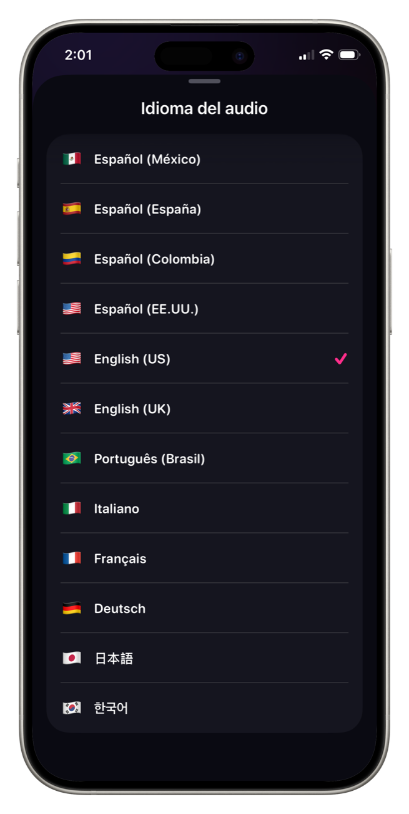

How to translate your video's subtitlesCómo traducir los subtítulos de tu video
Translating your captions is the cheapest way to reach an audience that does not speak your language. You do not re-record, you do not re-edit — the same clip goes out with different words on it.Traducir tus subtítulos es la forma más barata de llegar a una audiencia que no habla tu idioma. No volvés a grabar, no volvés a editar — el mismo clip sale con palabras distintas encima.
There are two things that go wrong when people do this quickly, and both are easy to avoid once you know them.Hay dos cosas que salen mal cuando esto se hace apurado, y las dos son fáciles de evitar una vez que las conocés.

Get the source language right firstPrimero acertá el idioma de origen
Translation quality is capped by transcription quality. If the app transcribed your Spanish as if it were English, the translation is working from nonsense and there is no fixing it downstream.La calidad de la traducción está limitada por la calidad de la transcripción. Si la app transcribió tu español como si fuera inglés, la traducción está trabajando sobre un disparate y no hay forma de arreglarlo después.
Set the audio language before transcribing, not after. It takes one tap and it is the difference between a usable caption track and a comedy of errors.Elegí el idioma del audio antes de transcribir, no después. Es un toque y es la diferencia entre una pista de subtítulos usable y una comedia de errores.
Text changes length, and your layout has to survive itEl texto cambia de largo, y tu diseño tiene que sobrevivirlo
Spanish and French run roughly 15 to 25% longer than English. German can be worse. A caption that fit on one line in the original will wrap onto two or three in translation, and a layout tuned to the shorter version breaks.El español y el francés corren aproximadamente entre 15 y 25% más largo que el inglés. El alemán puede ser peor. Un subtítulo que entraba en una línea en el original se va a partir en dos o tres traducido, y un diseño ajustado a la versión corta se rompe.
The fix is to re-check placement and size after translating, not before. If your captions sat close to an edge, they will now cross it.La solución es volver a revisar posición y tamaño después de traducir, no antes. Si tus subtítulos estaban cerca de un borde, ahora lo van a cruzar.
One video, several versionsUn video, varias versiones
The strongest use of this is not one translated video — it is the same clip exported two or three times with different caption languages, posted to accounts or markets that each get their own.El uso más fuerte de esto no es un video traducido — es el mismo clip exportado dos o tres veces con distintos idiomas de subtítulo, publicado en cuentas o mercados que reciben cada uno el suyo.
The footage cost you once. Every extra language after that is a couple of minutes.El material te costó una vez. Cada idioma extra después de eso son un par de minutos.
How to do it in CharlatanCómo hacerlo en Charlatan
- Set the audio language on the home screen before you pick the clip, so the transcription starts from the right place.Elegí el idioma del audio en la pantalla de inicio antes de elegir el clip, para que la transcripción arranque del lugar correcto.
- Let it transcribe, then read through the caption list and fix anything misheard. Errors here get multiplied by translation.Dejá que transcriba, después leé la lista de subtítulos y corregí lo que haya entendido mal. Los errores acá los multiplica la traducción.
- Open the translate sheet and choose the target language.Abrí la hoja de traducción y elegí el idioma de destino.
- Re-check size and position — translated lines are usually longer, and this is where layouts break.Volvé a revisar tamaño y posición — las líneas traducidas suelen ser más largas, y ahí es donde se rompen los diseños.
- Export. Then, if you want another language, go back, translate again and export a second file from the same project.Exportá. Después, si querés otro idioma, volvé, traducí de nuevo y exportá un segundo archivo desde el mismo proyecto.
Questions people also askLo que también preguntan
Can I translate subtitles without re-recording the video?¿Puedo traducir los subtítulos sin volver a grabar el video?
Yes. The audio stays as it is; only the caption text changes. The viewer hears the original language and reads the translation, which is how most subtitled content has always worked.Sí. El audio queda como está; solo cambia el texto del subtítulo. El que mira escucha el idioma original y lee la traducción, que es como funcionó siempre casi todo el contenido subtitulado.
Why do my translated captions no longer fit?¿Por qué mis subtítulos traducidos ya no entran?
Because most languages are not the same length as English. Spanish and French run 15 to 25% longer, so lines that fit before now wrap. Reduce the size slightly or move the caption further from the edges after translating.Porque casi ningún idioma tiene el mismo largo que el inglés. El español y el francés corren entre 15 y 25% más largo, así que líneas que entraban ahora se parten. Bajá un poco el tamaño o alejá el subtítulo de los bordes después de traducir.